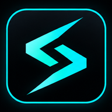
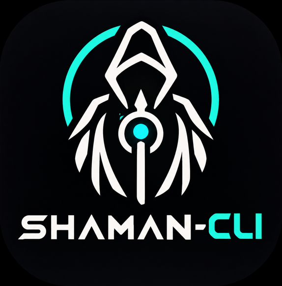
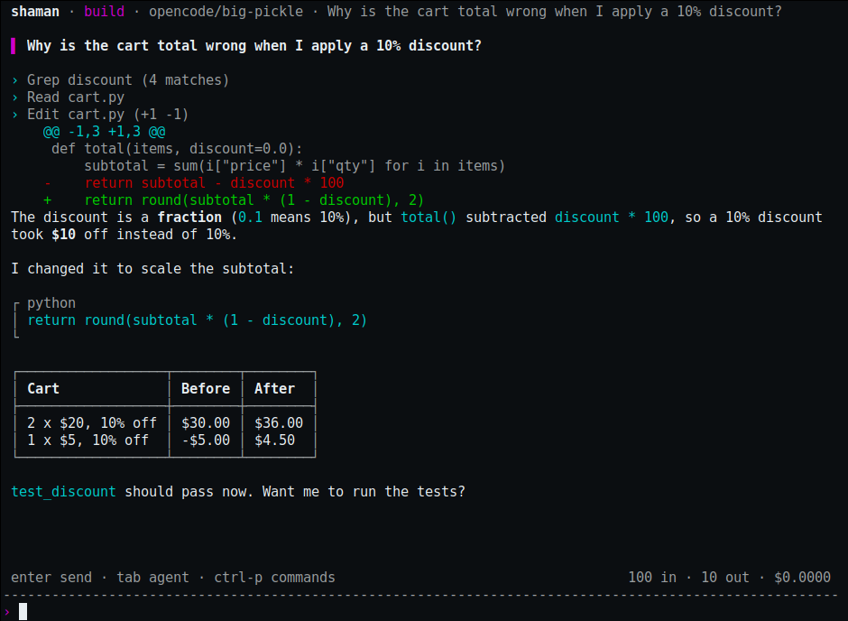
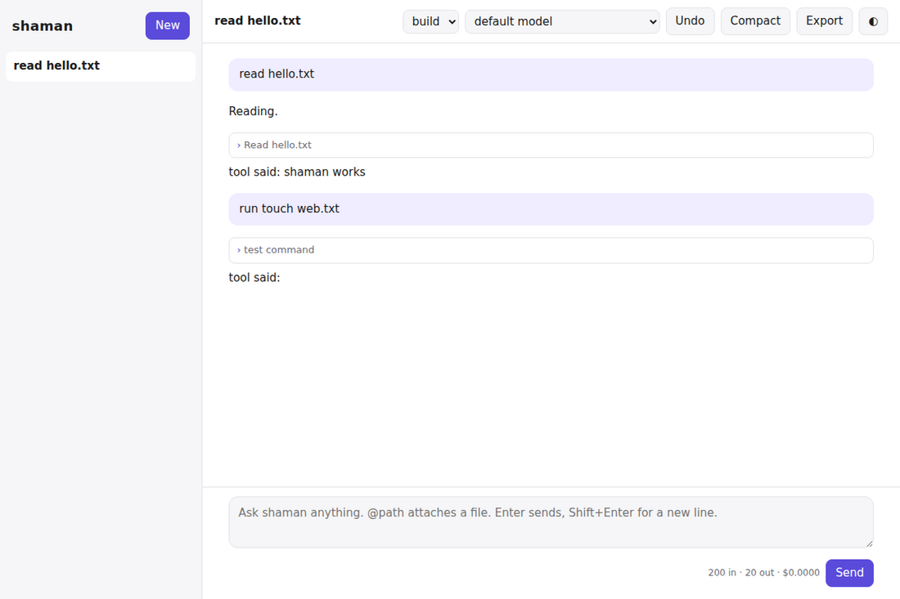

shaman-cli
One native C++ binary. Free models out of the box, any provider with a key. Reads, edits, runs and verifies your code.
$ shaman # full-screen UI $ shaman run "why is the build failing?" $ git diff | shaman run "review this" $ shaman web # browser UI
Starts in milliseconds, no runtime to install.
Big Pickle and other free models work with no account. When a free model is rate limited, shaman switches to the next one.
Anthropic, OpenAI, Gemini, OpenRouter, xAI, DeepSeek, Groq, Mistral, or local Ollama and LM Studio.
A full-screen TUI, a browser UI, a native desktop app, plus an HTTP API and ACP for editors.
Read, edit, patch, grep, run commands, search the web, use language servers and run formatters after every edit.
Code review, debugging, testing, security, PDF, Word, Excel, PowerPoint and more, loaded only when relevant.
MCP servers (stdio, HTTP, OAuth), plugins in any language, custom agents, commands and skills.
Edits and commands ask first, read-only plan mode, a loop guard, and undo that never touches your git state.
Per-subsystem debug logs, full JSONL traces, and shaman debug to inspect prompts, models and permissions.
The same agent in the terminal and in the browser.


shaman web), also the desktop appBuild from source with CMake and a C++23 compiler.
# Debian/Ubuntu: apt install cmake ninja-build libcurl4-openssl-dev libssl-dev nlohmann-json3-dev # macOS: brew install cmake ninja curl openssl nlohmann-json $ git clone https://github.com/nikolas-chambers/shaman-cli $ cd shaman-cli && cmake -S . -B build -G Ninja -DCMAKE_BUILD_TYPE=Release $ cmake --build build && sudo cmake --install build
Docs: README · Config · HTTP API · Plugins · Architecture